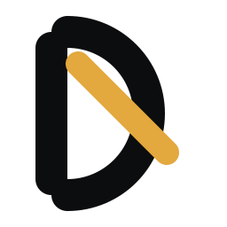
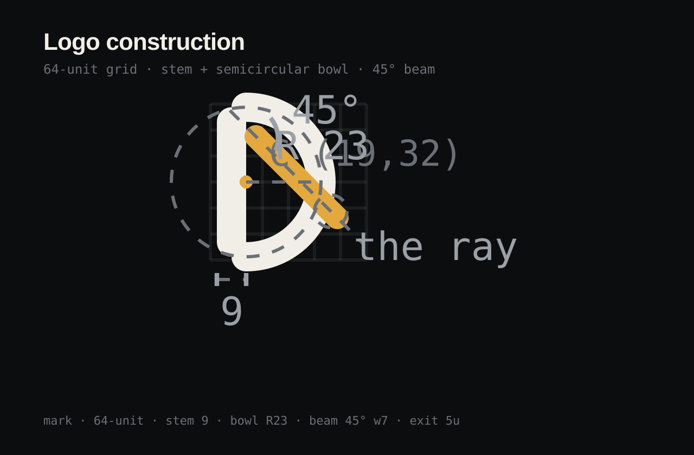
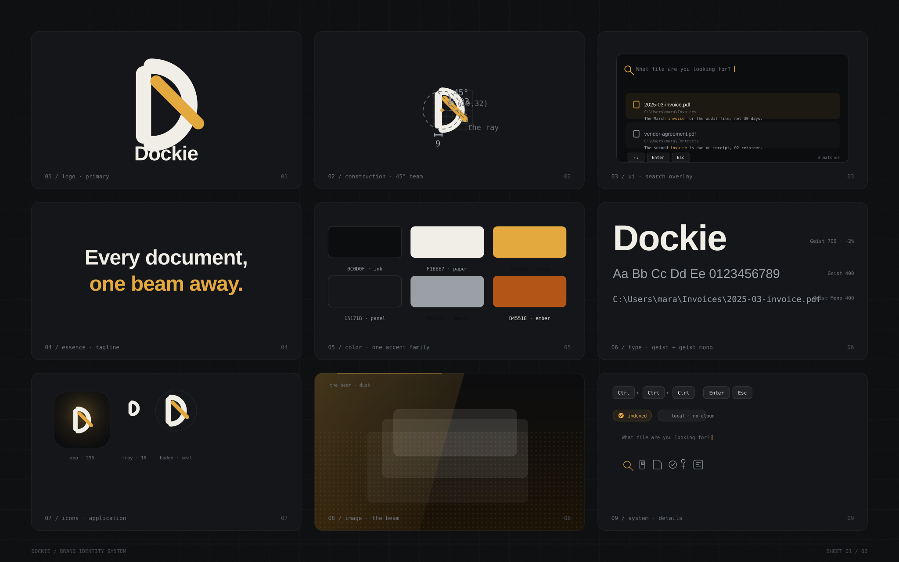
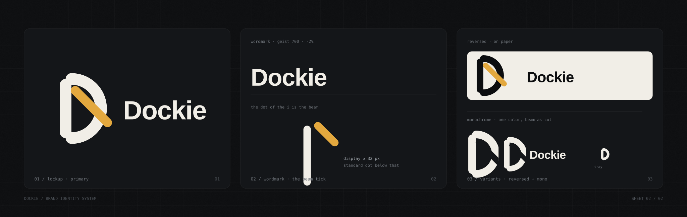

Brand Identity System · v1.0
Dockie is a beam of light over your documents: a local, keyboard-first search overlay for Windows. The identity system is built around one image, light passing through the letter D, finding the document, escaping as a ray.
The Beam-D mark: a geometric D whose counter holds a 45° beam that pierces the bowl and escapes as a ray. The letterform is never broken. Four variants, one rule each.

primary · dark

reversed · light

monochrome · beam as cut

lockup · primary

wordmark · Geist 700 · -2%

construction · 64-unit grid · 45°
app icon · 256
tray · 16 · dark taskbar
tray · 16 · light taskbar
3 × 3 identity system: logo, construction, UI application, essence, color, type, icons, image direction, system details.

Primary lockup, the beam tick that replaces the dot of the i, reversed and monochrome variants.

One accent family. Beam, beam-strong and ember are the same hue at different stops; alert is functional only. Light mode: paper background, ink text, beam accent.
Geist for everything, Geist Mono for keys, paths and labels. Precise, calm, zero hype. The vocabulary is the keyboard: Ctrl ↑ ↓ Enter Esc
Do
Keep the D intact. Let the beam do the talking. Smoke text on ink. Earn the amber. One message per surface.
Don't
Outline the mark. Gradient the letterform. Glow the beam. Add a second accent. Put the beam on the stem. Use the full mark below 32 px.